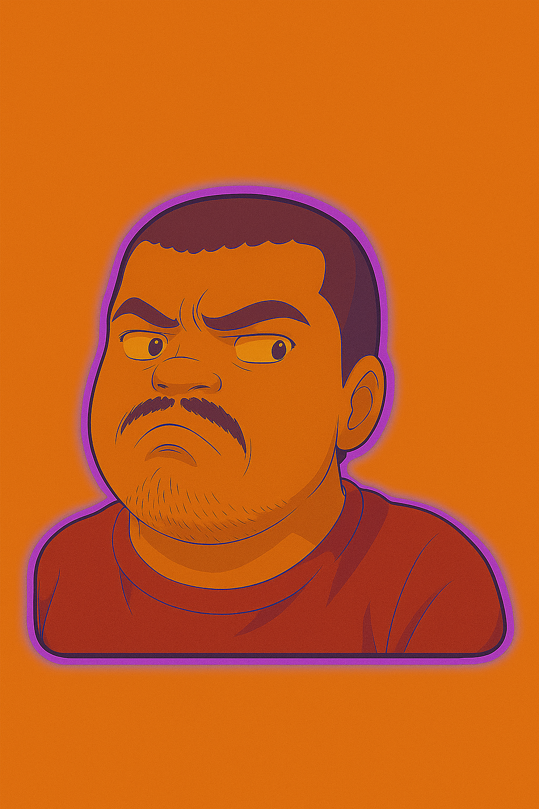

Currículo
Profissional em transição de carreira, com experiência como Analista de Suporte Jr desde 2021. Atualmente cursando Análise e Desenvolvimento de Sistemas e focado em desenvolvimento Front-end.
Possui conhecimentos em HTML, CSS, JavaScript (básico) e está em fase inicial de aprendizado em React, Dart e Python. Conta ainda com experiência em atendimento técnico e suporte. Motivado a consolidar carreira na área de tecnologia, aplicando boas práticas de desenvolvimento e aprimorando constantemente suas habilidades.
Experiências
- Empresa Quality Digital | 2021 - 2024 | atuava como Analista de Suporte Jr. para Empresas e Clientes usuários do sistema da © 2025 Western Union.
- Empresa Quality Digital | 2024 - Atualmente | atua como Analista de TI Jr. para colaboradores da empresa @ 2025 Obramax Atacado e Construção, prestando suporte para sistemas como Vetex, Service Now e SAP.
Estudos
- Curso Lógica de programação: mergulhe em programação com JavaScript - Alura Cursos com certificado
- Curso Lógica de programação: explore funções e listas - Alura Cursos com certificado
- Curso Lógica de programação: comece em lógica com o jogo Pong e JavaScript - Alura Cursos com certificado
- Curso HTML e CSS: Classes, posicionamento e Flexbox - Alura Cursos com certificado
- Curso HTML e CSS: cabeçalho, footer e variáveis CSS - Alura Cursos com certificado
- Curso HTML e CSS: ambientes de desenvolvimento, estrutura de arquivos e tags - Alura Cursos com certificado
